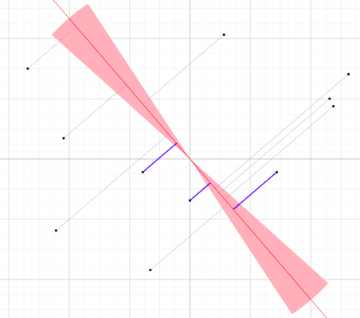
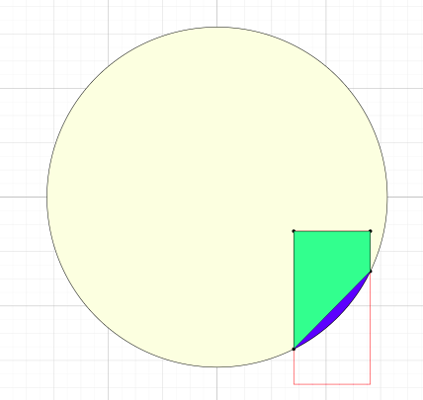

Welcome to the Museum of 2D art made with the geodeb library
Click on an image to enter the visualization.
Convex hull
Circular sweepline: Maintaining K closest points

Google Code Jam 2009:
Problem F. Lights
Pizza Cutting

by Riley Borgard